问题组件允许您在您课程内容中添加互动式及自动评分的练习。 您可以在Studio下创建不同类型的问题。
通过默认设置，所有问题都会得分，但是不会计算学生的总分。 若您想让这些问题计算学生的总分，修改保存问题的小节的作业类型。
本章讲述的是问题组件的基础知识，即：您与学生所见的视图，每个问题组件的选项。欲知单个问题类型，请见 创建练习和工具.
欲知更多信息，请浏览以下主题：
凡是出现在edX平台的所有问题均包含以下功能。
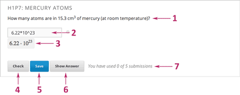问题文本 问题文本允许使用任何标准HTML格式。
学生答案填写区域 学生在此区域输入答案。回答区域的样式随着问题类型而变化。
提交答案 对于一些问题类型，Studio使用MathJax提交完美的数学公式。
检查按钮 T学生点击检查，查询上交的答案是否争取。若答案正确的话，则出现绿色的打勾符号。
保存按钮 学生点击保存，保存的是正确的答案，而非提交。因此，学生可回头修改问题的答案。
显示答案按钮 此按钮是可选择的。学生点击显示答案时，学生能看到正确答案（见上方第2点）和解题说明(见下方第10点）。教师可设置是否开放此功能。
提交答案次数 教师可设定提交次数限定或不设定提交次数。 默认情况下，整个课程中所有问题的 最多尝试次数 是空值，这表示提交答案次数是无限的。 如果课程的 最多尝试次数 设定为一个特定的值，课程中的每个问题的尝试次数均为这个值，不能设为无限。
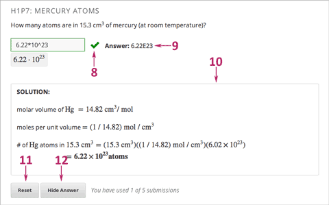反馈 学生点击检查按钮后，所有问题都会显示绿色复选标记或红X。
正确答案 大多数问题都需要教师指定一个唯一的正确答案。
解析 教师可以添加一些解析。当学生点击 显示答案 按钮时，会显示相关解析。
重置按钮 此按钮可以清除学生输入的内容，使问题保持原样。 如果学生已经提交了答案，点击 重置按钮 清除已经提交的内容。 如果问题包含随机变量且随机化设置为 重置 ，问题中的值将改变。 如果超过了最多尝试次数，重置按钮将不可见。 not yet been submitted, and try again to answer the question. If the student
隐藏答案按钮
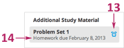分级 教师可以决定一组问题是否进行分级。如果一组问题要进行分级的话，课程作业栏就会出现一个钟表图标。
到期日 问题是有期限的。过期的问题就不会有检查按钮了，也不能在进行回答或提供回馈了。
Note
问题可以打开或者关闭。关闭的问题没有检查按钮。 学生仍然可以看见问题，答案和解析，但是不能查看他们自己做的答案，不能提交答案，也不能更改早期的分数。
还有一些题没有立即可见的属性，您可以在Studio中设置这些属性。
所有的问题都以XML写成。但是，Studio有两个编辑问题的界面：简易编辑器和进阶编辑器。
通过点击简易编辑器界面右上角的进阶编辑器按钮，您可以随时从简易编辑器切换到进阶编辑器。 但是您不能从进阶编辑器切换到简易编辑器。
当您选择下列问题类型时，简易编辑器将开启并显示一个问题示例。
下图显示的是简易编辑器中的多项选择题。
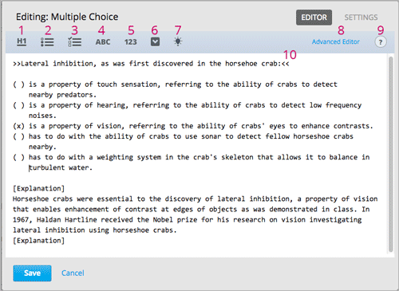简单编辑器含有一个工具栏，可将您的问题文本格式化。当您选中文本，点击格式化按钮之后，简单编辑器就可自动将您的文本格式化。
工具栏按钮如下：
创建1级标题
创建多个选项。
创建复选框选项。
创建文本输入选项。
创建数值输入选项。
创建下拉选项。
创建解析，当学生点击显示答案时，就会显示相关解析。
在进阶编辑器中打开问题。
打开格式提示清单。
通过可用标签来识别问题。工具栏选项不可用，但当您使用两对尖角括号指向文本时， 前台将此文本显示为问题的可用标签。
此外，edX Insights使用可用标签来确定每个项目中的问题。 更多信息请参考 Using edX Insights.
进阶编辑器 要用XML打开问题。问题模板包括拖拽，下拉和数学表达式，这些都可在进阶编辑器中直接打开。
下图显示的是进阶编辑器中打开的多项选择题。
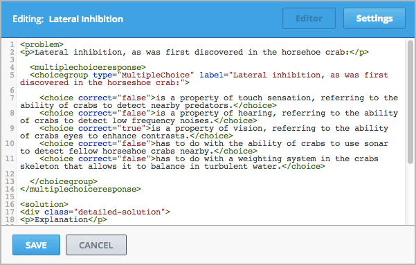以下问题模板可在进阶编辑器中打开。
除了问题的文本,您使用问题组件创建的问题包括以下设置。这些设置在组件编辑器中的设置选项卡中。
此设置显示您问题的名称。问题名称将以问题标题的形式显示在LMS和页面上方的条状区域。
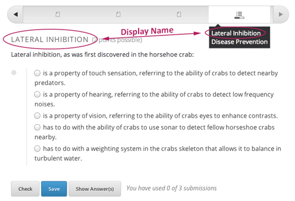此外，edX Insights 使用显示名称确定每个问题。 唯一且描述准确的显示名将帮助您快速而准确地找到需要分析的问题。 更多信息请参阅 Using edX Insights.
此设置规定学生最多可尝试回答问题次数。系统默认学生的回答次数不受限制。 如果课程范围内的最多答题次数设置为一个特定值，每个问题的默认值也为此特定值，不能将独立问题的值设为无限。
Note
将问题最多回答次数设置为1或者更多，问题才能出现在学生答题统计报告中，您可以在上课时下载该报告。
Note
Studio可以保存所有问题的分数，但是只有这些分数属于某个小节， 并且这个小节被设定成计分后，才会对学生的期末成绩造成影响。
这项设定可以规定问题的最大分值。问题的分值标在在问题题目后面。
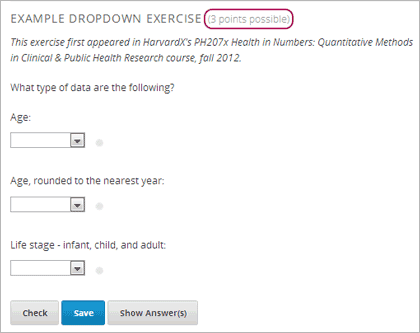系统默认，问题组件中的每一个应字段或者“答题框”都值1分。 每一个问题组件都包含多个应字段。 例如，上述问题组件包含一个下拉问题，这个下拉问题包含三个独立问题需要学生来回答，因此它有三个应字段。
下面的问题组件包含一道文本输入题，就只有一个应字段。
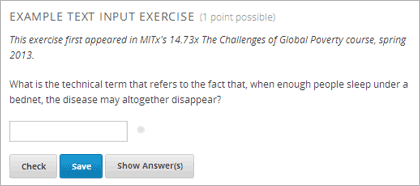学生回答问题得分由以下公式计算得出：
分数=问题权重×（正确答案/输入总和）
范例
接下来是一些计算分数的例子。
范例1
一个问题的权重属性是空的。这个问题含两个应字段。因为有两个应字段，所以最大分值为2.0分。
如果一个应字段中是正确答案，一个应字段是不正确答案，那么这个学生只能得到2分中的1.0分。
范例2
一个问题的权重属性为12，有三个字段。
如果一个学生的答案包含2个正确答案和1个错误答案，那么他的分数就是12分中的8分。
范例3
一个问题的权重属性为2，有四个应字段。
如果一个学生的答案包含1个正确答案和3个错误答案，那么他的分数就是2分中的0.5分。
随机化设定可以决定是否要在每次学生看到问题的时候，将其中指定的内容随机化呈现。 例如，每当一个学生提交了一个问题的答案时，后面的问题要随机改变。
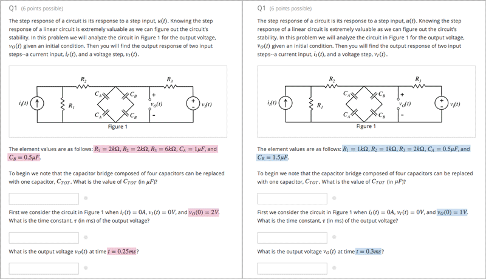如果您想将问题的指定内容进行变更或者随机化呈现，您需要做到以下两点：
Note
此随机化设置不同于问题随机化处理。随机化设置是在一个问题内部进行随机处理。 而问题随机化是指将不同问题或者同一问题的不同版本分配给不同的学生。更多信息,请参见 问题随机化 。
置随机化，选择随机化设置选项。此设置含四个选项。
| 总是 | 学生每次点击检查按钮之后， 总会看到一个问题的不同版本。 |
| 重置 | 学生每次点击重置按钮之后， 总会看到一个问题的不同版本。 |
| 从不 | 所有学生都会看到问题的同一版本。 此为系统默认。 |
| 每个学生 | 学生个人每次查看， 都会看到相同版本的问题， 但此版本不同于其他学生查看的版本。 |
Note
The edX Platform has a 20-seed limit for randomization.
此设置决定何时将答案显示给学生看。此设置含多个选项。
| 总是 | 学生点击显示答案按钮时，显示答案。 |
| 已回答 | 在学生回答问题之后显示答案。 如果问题重置，答案在学生再次回答之 前不可见。（学生回答问题之后，问题 为已尝试和已回答状态。 问题重置之后，问题将是尝试而未解答 状态。） |
| 已尝试 | 在学生尝试回答问题之后显示答案。 如果问题重置，答案将持续显示。 （当学生回答问题之后，问题为已尝试 已回答状态。问题重置之后，问题将是 尝试而未解答状态。） |
| 关闭 | 学生用完所有的回答问题限制次数或者 问题过期时，显示答案。 |
| 完成 | 学生正确回答问题之后，学生用完限制 回答的次数，或者问题过期，显示答案。 |
| 正确或过期 | 学生正确回答问题之后，或者问题过期 显示答案。 |
| 过期 | 问题过期时，显示答案。 |
| 永不 | 永不显示答案。在这种情况下，显示答案 按钮不会出现在Studio或者LMS的问题 旁边。 |
此设置决定 重置 按钮是否在问题中可见。 学生可以通过点击 重置 清除任何未提交的内容，并再次尝试回答问题。 如果学生已经提交了答案，点击 重置 将清空提交内容。 如果问题中包含随机数和设为 重置 属性的随机生成器，随机数值将改变。 如果最多尝试次数已超过，重置 按钮将不可见。
此问题层级的设置将覆盖课程层级的 在问题中显示重置按钮 属性。
此设定为学生在多次提交之间需要等待的秒数。 如果值为0，学生在回答错误以后可以立即再次回答问题。
添加等待时间可以防止学生猜测答案。
如果学生在等待时间内再次尝试回答问题，她将看到以下信息：
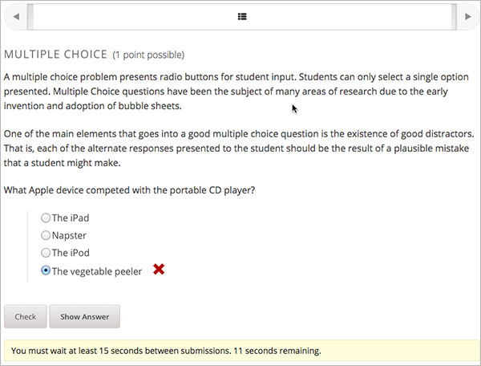Warning
当您已经发布问题之后，要做修改请务必格外小心！
当学生回答一个问题并提交后，Studio就会保存学生的答案，保存学生得到的分数以及这个问题的最高分。 当学生重新提交答案时，Studio会对这些内容进行更新。 然而，如果教师对问题或者其属性进行变更，Studio无法将学生之前回答的情况进行自动更新。
例如，当您已经发布一个问题，并将答案设置为3。 一些学生提交答案之后，您才发现答案不是3，而是2。 您更改答案后，对于提交了正确答案2的学生，Studio无法更改他们的分数，因此他们的得分是错的。
再举一个例子，您可能将一个问题的2个应字段改为3个应字段。 那么之前提交答案的学生得出的分数可能是0,1或者2分。 同一问题，修改之后提交答案的同学的分数则可能为0,1,2或者3分。
但是，如果您修改了问题的权重属性，刷新进程页面后，现有的分数也会更新。.
当您创建问题时，可能会有多个选项。 您可以在一个问题组件内设置多个问题，或者您可以将一个问题设置成不同学生做不同版本。
您可能会创建一个问题，问题答案不只一种。 例如，您想创建一个数值输入的问题，然后创建这个数值输入问题的多个选项。 或者，您想让学生一次查看多个问题的答案。 设置这样的问题，您可以在一个组件内设置多个问题。这些问题可以是不同题型的。
Note
您不能在含有多个问题的组件中使用 自定义JavaScript问题 每个custom JavaScript问题必须在一个单独的组件中。
为了在一个组件内建立多个问题，可以新建一个空的进阶问题组件，然后在组件编辑器中为每个问题添加XML。 您只需将XML添加到问题和答案中即可。您不必为其它内容添加代码，比如检查按钮。
检查按钮，显示答案按钮，及重置按钮还有您为问题组件选择的设置，适用于组件内的所有问题中。 因此，如果您将尝试答题次数设置为3，那么学生则有三次机会来回答组件内的整套题，而不是组件内每道题都可以回答3次。 如果学生点击检查，那么LMS就会马上计算本组件内所有问题的得分。 如果学生点击显示答案，那么组件内所有问题的答案都会显示出来。
您可能想给不同学生出不同的题，或者同一问题使用不同版本。 您可以用Studio为每个问题或同一问题的每个版本创建一个问题组件，然后对课程进行编辑，以使得学生查看问题时可以随机变化。
请注意在Studio中，问题随机化与随机化设置是不同的。 随机化设置是指一个问题内部的随机变化。 问题随机化是让不同学生能查看不同问题或者同一问题的不同版本。
Note
设置不同版本问题随机变化需要您将您的课程进行输出， 在文本编辑器中编辑您课程中的XML文件，然后再将您的课程导入到Studio中。 我们建议您操作之前，将您的课程进行备份。如果您对XML编辑不是很熟悉，我们建议您用文本编辑器编辑您的课程。
段，节，单元和组件在课程预览视图中与课程导出后文件列表中的名称不同，打开XML文件进行编辑的时候，这些名称也不同。
| 课程预览视图 | 文件列表 |
| 段 | 章 |
| 节 | 横向 |
| 单元 | 纵向 |
| 组件 | 讨论, HTML, 问题, 或视频 |
例如，如果您想在您的课程里面找一个特定部分，您打开课程的文件列表，在章节文件夹中查找。要找某一章节，您就查找纵向文件夹。
在需要设置随机化问题的单元中，为每一个问题或者每一个问题版本创建一个单独的问题组件。 例如，您想要做4个问题版本，您就要创建4个单独的问题组件。 记录一个出现在单元位置的单元识别符字段的32位的单元ID。
导出您的课程。相关信息，请查看 输出和导入课程。 保存包含您您课程的记忆位置的.tar.gz文件，这样您就能很容易的找到它。
在文件和文件夹列表中，打开纵向文件夹。
Note
如果您这一单元还未发布，打开草稿文件夹，然后打开草稿中的纵向文件夹。
在纵向文件夹中，找到与您在第一步中标记的单元ID名称相同的.xml文件， 在文本编辑器中打开该文件，比如Sublime 2。 举个例子，如果这个单元ID是e461de7fe2b84ebeabe1a97683360d31，那么您就 打开e461de7fe2b84ebeabe1a97683360d31.xml这个文件。
这个文件包含了在这个单元所有的组件，以及这些组件在URL中的名称。 例如，以下文件包含4个问题组件。
<vertical display_name="Test Unit">
<problem url_name="d9d0ceb3ffc74eacb29501183e26ad6e"/>
<problem url_name="ea66d875f4bf4a9898d8e6d2cc9f3d6f"/>
<problem url_name="2616cd6324704f85bc315ec46521485d"/>
<problem url_name="88987707294d4ff0ba3b86921438d0c0"/>
</vertical>
为您要进行随机化处理的问题组件添加<随机化> </随机化>标签。
<vertical display_name="Test Unit">
<randomize>
<problem url_name="d9d0ceb3ffc74eacb29501183e26ad6e"/>
<problem url_name="ea66d875f4bf4a9898d8e6d2cc9f3d6f"/>
<problem url_name="2616cd6324704f85bc315ec46521485d"/>
<problem url_name="88987707294d4ff0ba3b86921438d0c0"/>
</randomize>
</vertical>
添加<随机化> </随机化>标签标签之后，保存并关闭.xml文件。
重新将您的课程压缩为a .tar.gz文件。
了解关于如何在Mac系统中操作的相关信息，请查看 <http://osxdaily.com/2012/04/05/create-tar-gzip/>`_.
了解关于如何在windows系统操作的相关信息， 请查看 <http://stackoverflow.com/questions/12774707/how-to-make-a-tar-gz-on-windows>`_.
在Studio中，再次导入您的课程。
Note
您可以为问题添加内置提示框，这样当学生将光标移到提示框图标上，可以看到您为帮助他们理解问题所写的文字内容。
例如，在以下问题中，学生将光标移动到提示框图标上，可以看到缩略词“ROI”的定义：
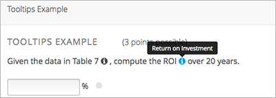Note
对于使用屏幕阅读器的学生，当阅读器聚焦在提示框图标上时，提示框将展开并显示提示文字。
要添加提示框，您需要将您想让提示显示的文字内容装在 clarification 元件里。
例如，以下问题包含两个提示框：
<problem>
<text>
<p>Given the data in Table 7 <clarification>Table 7: "Example PV
Installation Costs", Page 171 of Roberts textbook</clarification>,
compute the ROI <clarification><strong>ROI</strong>: Return on
Investment</clarification> over 20 years.
</p>
. . .